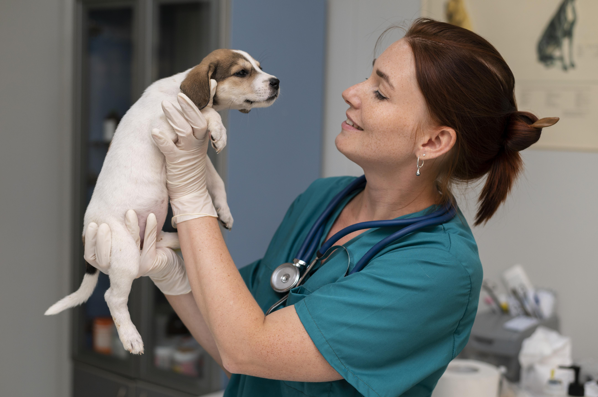
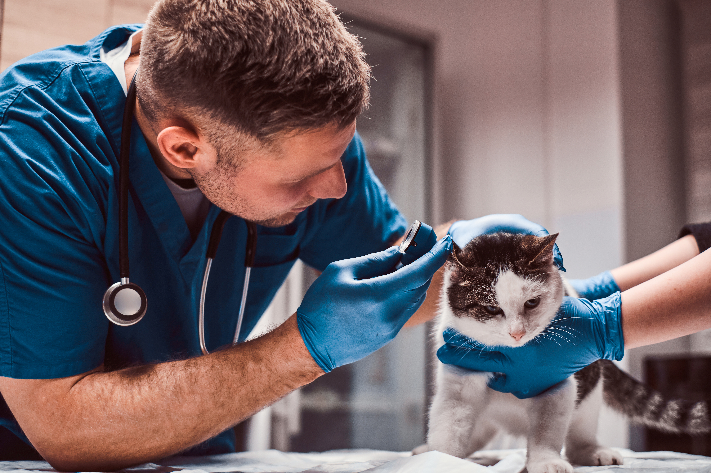
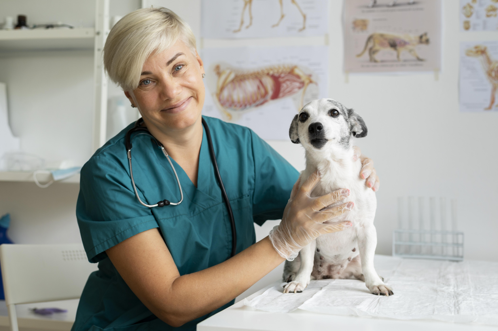
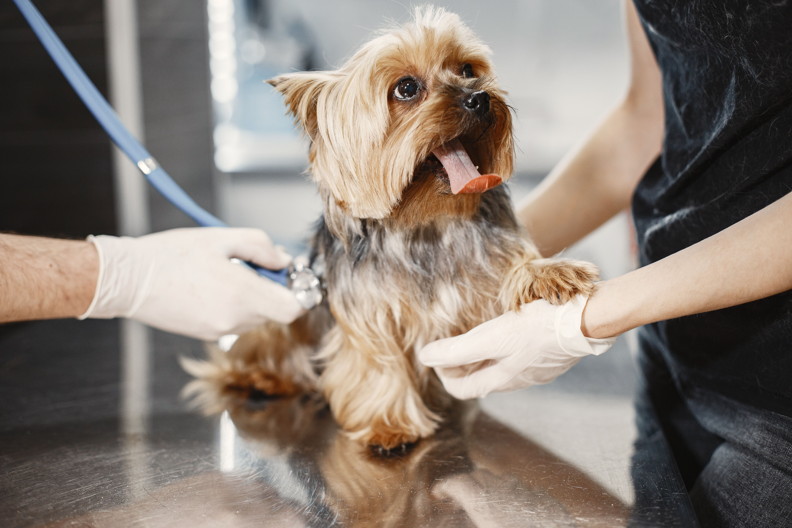

Consultas
Control Clínico en general. Libreta Sanitaria
Atención de excelencia para tus mascotas
Consultas, vacunación, desparasitación, cirugías, urgencias las 24 Horas
Control Clínico en general. Libreta Sanitaria
Calendario completo de vacunación
Castraciones y cirugías programadas




| Día | Mañana | Tarde |
|---|---|---|
| Lunes a viernes | 8.30 a 12 Horas | 16.30 a 20 Horas |
| Sábado | 9 a 12 Horas | Cerrado |
| Urgencias | 24 Horas | 24 Horas |